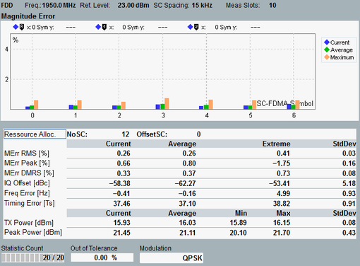

Views Magnitude Error, Phase Error
Both views show a diagram and a statistical overview of results per slot.

Magnitude Error view
The diagrams (bar graphs) show the average magnitude error and phase error for each SC-FDMA symbol in the measured slot. The symbols are numbered from 0 to 6, with the reference symbol labeled 3.
The bar graphs show RMS-averaged and therefore positive values. The average runs over all modulation symbols in the SC-FDMA symbol.
For a description of the statistical overview, see "View TX Measurement".
For the parameters at the bottom, see "Common View Elements".
For query of the diagram contents via remote control, see: